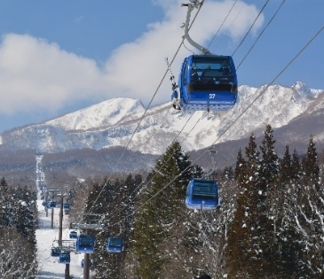
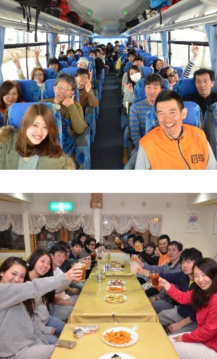
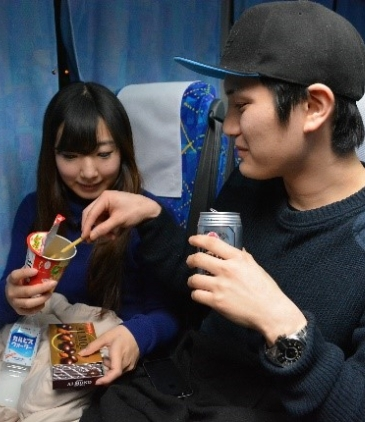
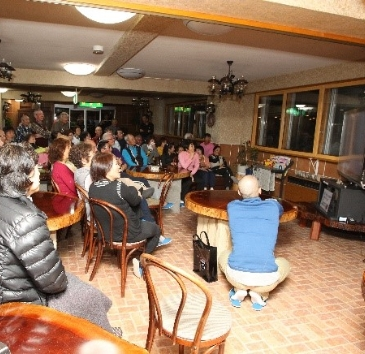
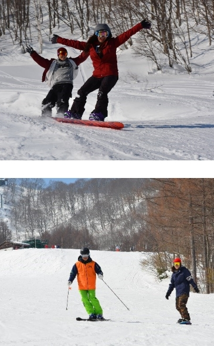
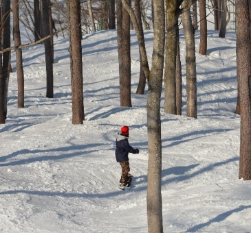
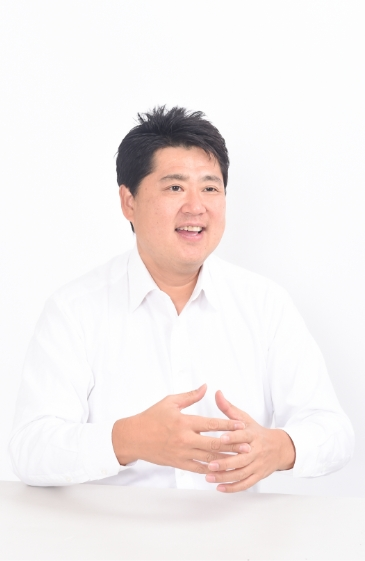

代表インタビュー
Q大人のスキー・スノーボードツアーを始められたということですが、、、
まず前提としてスキー・スノーボードって本当に楽しいんです。都会の喧騒から離れて非日常を味わえる絶景や、風を感じて滑る爽快感。また温泉や、趣味を共有した仲間との美味しい食事やお酒。
社会人の方が週末などを利用して訪れると、どうしても「楽しかった」「また行きたい」という気持ちよりもネガティブな感覚の方が強くなって「疲れるからなぁ～」と1度参加したら2回目はない方が多いのが現状です。
だからぜひ「ゆったりとスキー・スノーボードを楽しんでもらいたい。」そう思っています。
大人の遊びには、“ゆとり”が必要です。
空間的ゆとり、時間的ゆとり、心理的ゆとり。
大人のスキースノボツアーには、この ”ゆとり” を主に企画しております。

Q一般的に販売されているスキーツアーとはどのような違いがあるのですか？
通常のバスとは違い、前後のイスの間隔をゆったりさせた特別仕様のバスに乗り、くつろぎながらスキー場に向かう。会社終わりの19時～20時に出発してスキー場のホテルに直行します。そうすると0時前後には、ホテルに到着できるんです。バス内で夕食を食べながらお酒を嗜んで、少しウトウト、、、気づけばホテルに到着という流れです。そのまま部屋で就寝して、土曜日の朝はホテルの朝食を食べ、スッキリした気分でスキーを楽しむことができます。
また、すべてのプランに添乗員が同行して、楽しいバスツアーになるよう企画しています。ホテルもレンタル店もゲレンデへもご案内するので、何の心配もいりません。
車を運転してスキー場へ行くのいいけれど、運転手は疲れてしまうし、同行者は運転手に気にかけお酒も飲めないし、一番気になるのは慣れない雪道での事故ですよね。万が一、、、、保険や補償の問題色々あります。バスツアーなら疲れが軽減されるだけでなく、あらゆる面ですべてをお任せして楽しむことに集中出来るんです。しかも四季スキーを販売する四季倶楽部旅は、すでに43年もスキーの企画販売をやっている会社です。
昨今、スキーバスの事故などありましたが、四季スキーは、無事故・無違反でしっかりと法令に順守してやっているからこそ、ここまで多くのお客様に支えられ信頼や信用があるんだと自負しております。
なおスキーツアーを代理販売する旅行会社は多数ありますが、自身でプランニングしてバスをチャーターし、自社のお客様のみでツアーを運行している会社は数少なく、四季倶楽部旅が一番老舗の旅行会社となっております

Qたしかに、バスツアーには疲れるというイメージがありました。
そうなんです。一般的なバスツアーといえば、格安で深夜に狭いバスに揺られ翌朝に到着するコース。辛いけど安いし若いから乗り切れる、というイメージが強いかと思います。我々はこのイメージを払拭させたくて大人のスキー・スノーボードツアーをテーマにゆとりをもった、大人が楽しめるプランを企画しました。我々が実際に参加してみたいと思えるツアーでなくては意味がありません。そうでなければ、心の底からオススメできませんから。
実際、四季スキーに参加された多くのお客様から「昔のスキーバスツアーの嫌なイメージはなくなった」という声をいただいております。「金曜日の夜に到着してさらに土曜日も宿泊するので、普通の週末が連休のように感じて、とてもゆったりと充実した旅行を楽しめた」なんて声もあるんです。
たとえば土曜日の朝にスキー場に向かうバスツアーだと、早朝かなり早く起きなければならないし、到着は正午前後になるので、午後しか滑ることができない。
一番のネックは、朝はやく起きてスキー場に向かっているので、疲れがたまってしまい土曜日の夜を楽しめないんです。土曜日のスキーは肝なんです。

Q土屋社長が思うスキーツアーの魅力って何ですか？
旅行って、昼のイベントや遊びもモチロンですが、実は、夜をみんなで過ごす楽しみが、かなり重要な要素を占めているんです。仲間と夕食の後お酒を飲んだり、談笑したり、バカ話をしたり、、、そこで各個人の本質が出て距離が近くなり、信頼関係も高まったりするんです。皆さんご経験おありですよね。
ただ、土曜の朝に出発するツアーや、自身で車を運転してからスキーをすると、疲れがたまっていて早々に寝てしまうケースが多く、夜の楽しい思い出が残らないんです。頑張って起きてお付き合いもできるでしょうが、それはムリがたたるということで、結果として楽しかったけど「疲れた」「辛かった」「もう若くないな」という「良かったんだけど、もうちょっとね、、、」想い出になるんです。
スキーって、ゲレンデでの楽しみ以外に、気心しれた仲間や趣味を共有した友との談笑もセットなはず。これって結構重要なんですよ。
あと、どうせ滑るならスキー・スノーボードも上手くなりたい。体育会系みたいに滑る必要はないけど、格好よく＆素敵に、そつなく滑りたいですよね。ツアーに参加していると夜飲みながら、少し上手い人にアドバイスをもらって、翌日すぐそれを試すことができます。人にアドバイスをもらえて技術が向上できるのも楽しいんです。
四季スキーでは添乗員が同行して、お客様の滑りを写真や動画で撮影したりもできるので、夕食後に集まってみんなで映像を見ながらアドバイスをし合って楽しんでいます。

Q添乗員付きのツアーだからこそ、仲間ができて、楽しめるわけですね。
そうなんですよ。みなさん忘れがちですが、重要な時間です。わたしたちのバスツアーでは、すべてのコースに添乗員が同行して、お客様の滞在をしっかりサポートします。ただツアーに同行するだけではなく、「添乗員スキー場案内サービス」といって一緒にゲレンデに同行してコースを紹介しながら添乗員も滑るんです。絶景ポイントをお伝えしたり、滑っているところを撮影したりもしますよ。もちろん自由参加ですので、各自でお楽しみいただいても大丈夫です。
また添乗員は昼食もご一緒して、参加されているお客様同士が心地よく交流をはかれるよう、ケアもします。せっかく同じツアーに参加されていますし、仲良くなれたらもっと楽しい思い出が増えるんじゃないかと思うんです。
実は四季スキーは、ひとり参加の方も多いです。昔、一緒にスキーをしていた仲間は仕事も別々になったり、家庭もできて生活環境も変わったりで、なかなかスキー仲間が集まらない。そういう方たちもいます。夕食後は交流会という名の親睦会があり、各自がお酒やつまみを持ち寄り、楽しいひと時を過ごします。私たち四季スキーツアーを経て、一生涯の親友になった方やお付き合いされている方もたくさんいらっしゃいます。
私がお客様たちと接していて一番魅力的だと思うのは、多くの趣味を共有できる仲間との出会い、今後の人生を歩む中に、毎年冬になると会う仲間とのスキー。職場や年齢など関係ない、スキーという趣味で繋がっている仲間との旅行こそ、プライスレスな価値になるのではないでしょうか。
それが他とは違う四季スキーの魅力です。

Qスキーツアー業界の改革ですね？
いま、世の中のスキーツアーは格安というだけに走ってしまい、添乗員もいなければ、安く済ませるために深夜移動のバスで移動したり、宿泊施設に内容を落として安く提供してもらいプランニングしています。せっかくの楽しい旅行がそのような内容では、寂しい限りですよね。我々四季スキーは、それらとは一線を画したいと思い企画しております。
ちなみに、安さが悪いわけではなく、安いならではの良さもあるのは事実です。スキーを滑ることだけが目的であれば、多少の犠牲はしょうがないでしょうし、四季スキーでは1回しか行けないところ、他では2回行けるプランもあるはずですよね。四季スキーは安くありません。安くはないというよりも、見た目の旅行代金は安くありませんというのが正しいでしょうか。
旅行代金は格安といえませんが、お支払いいただいた金額以上の価値がそこにはあります。
以前はスキーをしていたのにスキーをやらなくなってしまった方はたくさんいらっしゃいます。しかし、なぜやらなくなったのか？と聞くと、「周りもやらなくなってしまったし、仕事終わりでの車の移動が大変」と。スキーの楽しさや爽快さは知っていても、スキーをする前段階の面倒臭さでやめてしまった方が多いのです。
私たちだけでは力不足かもしれませんが、“どうにかしなければ”と思っています。

Q最後に一言お願いします。
2017 年頃の夏、もともと東京駅⼋重洲口徒歩2分のところに会社を構えていましたが、再開発エリアとなり、急遽その年の末までに立ち退くことになりました。次のオフィスを探しているときに、色々と候補があったのですが、たまたま御茶ノ水の神田スキー店街を歩いていたところ、夏の暑い時期にも関わらず、大きな声をあげて「スキー板の最新モデルを展⽰しています！」「どうぞ気軽にお立ち寄りください！！」と、元気に汗をかきながら頑張っているんです。スキー場の来場者数が大きく減っていて、売上も良いわけないのに、頑張っているんですよ。こんなにも、スキー業界で頑張っている人がいるのに、わたしは、スキー人口も減っているし、価格競争も大変で、、、いろいろ諦めていたんです。
彼を見てわたしは奮起しました。
会社の場所は、この御茶ノ水スキー店街のど真ん中にしよう！そしてもう⼀度、この［スキーの街お茶の水］からスキーツアーのブームを創り出そう、そう決意しました。
スキーツアーは若者だけではなく、大人のスキーツアーという文化を、数年以内に築きたいと考えております。お茶の水にはスキー・スノーボードの楽しさを知ったスペシャリストたちが、多数軒を連ねています。スキー・スノーボードの楽しみ方を知らないまま、去っていく方達を増やしたのは、安売りに舵を切って販売した旅行会社にも責任があると思っています。このお茶の水で、多くの関係者の方々と共に、大人のスキー文化を創り上げようと、日々切磋琢磨しております。
近い未来 大人のスキーツアー という名目で、四季スキーが各方面で取り上げられ、多くのスキースノボファンやその関係者が、ニコニコ笑顔でバスツアーを見守ってくれるようになることを夢見ております。
